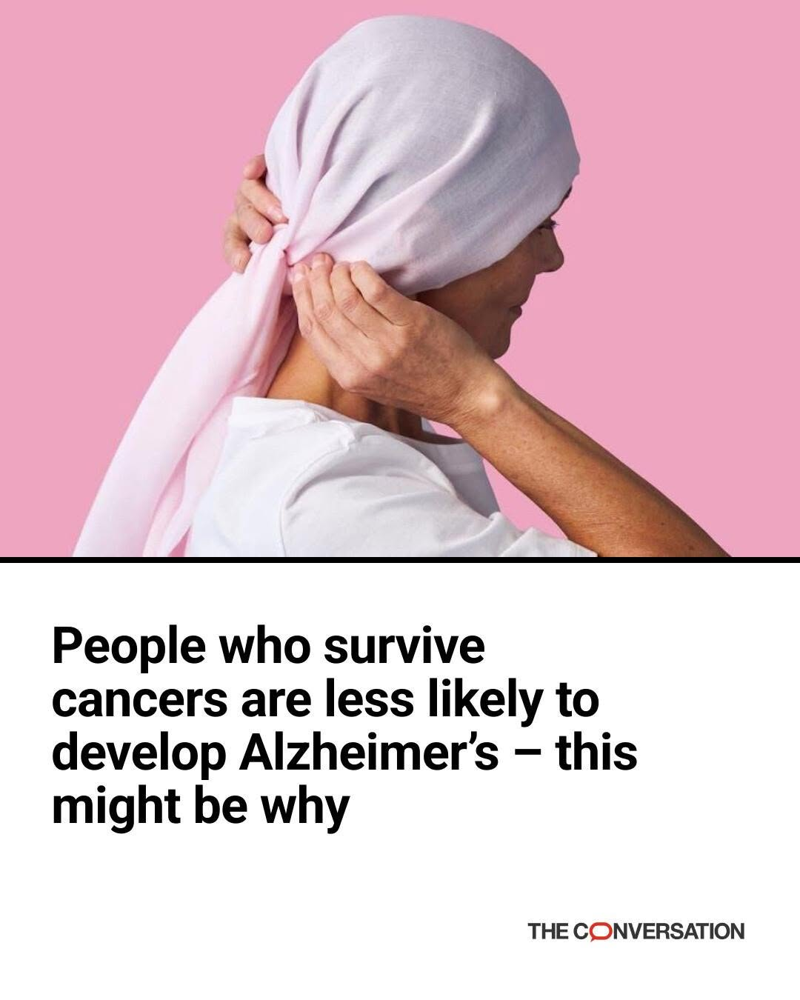

I posted about this remarkable study a few days ago.
This post has a nice description of it.
I posted about this remarkable study a few days ago.
This post has a nice description of it.
When this happens, it's usually because the owner only shared it with a small group of people, changed who can see it or it's been deleted.

An advocacy-style essay arguing that glyphosate should be avoided. It cites the 2015 IARC classification as probably carcinogenic to humans, based on limited human evidence of non-Hodgkin lymphoma, sufficient animal evidence and strong mechanistic evidence. Not specific to heart disease.

A reading of the literature on what has worked best in clinical trials for human longevity, beginning with weight loss. Lifestyle weight loss lowered all-cause mortality 15% in RCTs, and bariatric surgery was associated with 38-41% lower mortality in observational data.

Louis shares a mouse study suggesting some cancers release signals that help the brain clear Alzheimer's-linked proteins, a possible explanation for the observed inverse association.
Louis reposts an explanation of Laron syndrome, a mutation preventing IGF-1 production, and notes affected people have almost no cancer or diabetes, lower Alzheimer's risk and low CVD risk.
Louis praises a video on height, insulin/IGF-1 and longevity and lays out his argument: diet (refined starch/sugar and excess animal protein) is the main driver of IGF-1, and low IGF-1 is linked to lower cancer and diabetes risk. He cites Laron syndrome, with no documented cancer deaths, little diabetes and less heart disease and Alzheimer's, and a long-lived low-IGF-1 mouse. Claims come from the post and videos, not named papers.

A physician explains why he takes an SGLT2 inhibitor off-label: the drugs cause daily urinary glucose loss and may reduce risks of heart disease, cancer and dementia and even extend lifespan. Most evidence comes from people with diabetes, and Louis frames the class as possibly slowing aging itself.